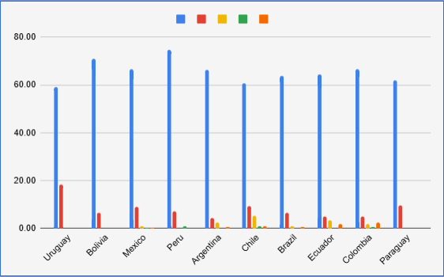
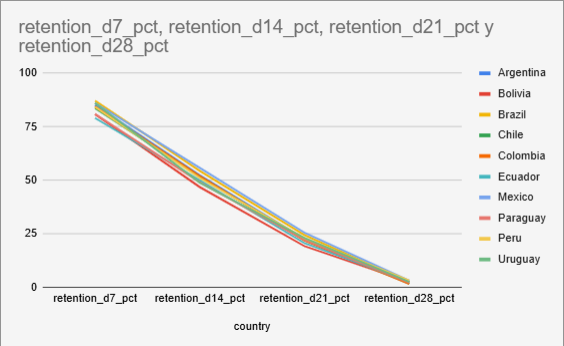
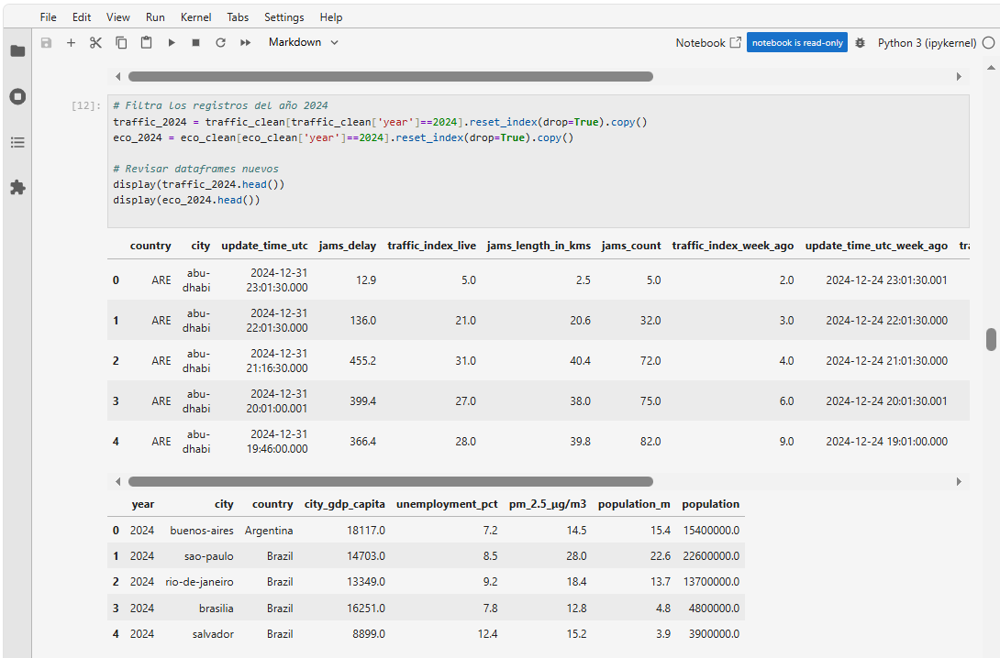
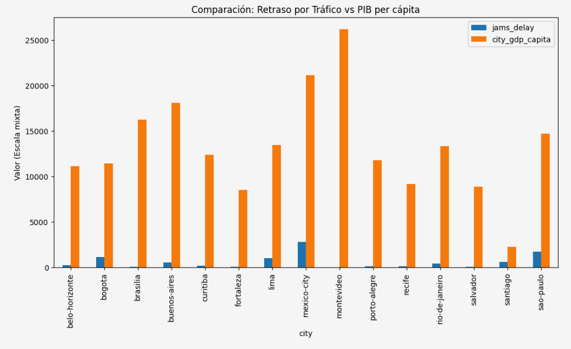

Data Analyst | Automation & Control Engineer
Transformando datos complejos en estrategias comerciales mediante modelado matemático y análisis sistémico.
Estudio profundo de la retención de clientes y optimización del funnel.
Análisis del comportamiento de usuarios en el proceso de compra para detectar puntos de fricción.
Identificar factores que influyen en la retención y su impacto directo en la conversión de ventas.
Limpieza de datos, análisis exploratorio (EDA), segmentación por cohortes y análisis de embudos.


Análisis multivariado de factores que afectan la saturación vial.
Estudio de la relación entre el crecimiento económico y la infraestructura en ciudades latinoamericanas.
Validar si el PIB per cápita es el factor principal en la calidad de la movilidad urbana.
La hipótesis inicial fue refutada, concluyendo que la movilidad depende de una tríada sistémica:


TripleTen Bootcamp
Especialización en análisis de datos masivos, SQL, Python, estadística aplicada y toma de decisiones basadas en datos de negocio.
Universidad Autónoma Metropolitana (UAM) | CDMX
Enfoque en modelado, diseño y control de sistemas de potencia (STATCOM), ingeniería electromagnética y electrónica de potencia. Investigación publicada en revistas internacionales (IEEE, MDPI).
Universidad Central "Marta Abreu" de las Villas (UCLV)
Sólida base en teoría de control, sistemas dinámicos, métodos numéricos y programación para la optimización de procesos industriales.
EDA, Modelado Matemático, Cohortes, Root Cause Analysis.
Python, SQL, Jupyter, Excel Avanzado, C/C++.
Métodos Numéricos, Sistemas de Control, Optimización.